AirPods Pro3
PERFORMANCE POWER FREEDOM
- 완전히 새로운 H2 탑재로 전에 없었던 다양한 기능을 구현합니다.
- 컴퓨테이셔널 알고리즘을 활용하여더욱 스마트한 노이즈 캔슬링 성능과 탁월한 3차원 사운드, 더 효율적인 배터리 사용시간을 선사합니다.
- 새롭게 설계된 내향 마이크는 음성향상과 알고리즘을 사용해 당신의 음성을 더 잘 인지하고 선명하게 만들어줍니다.
- 최대 2배 강력해진 액티브 노이즈 캔슬리 이전 세대 대비 최대 2배 강력해진 노이즈 캔슬링 성능과 H2칩탑재 최적의 위치에 배치된 노이즈 캔슬링 마이크와 후면 통풍구가 외부 소리를 빠르게 감지합니다.
- Apple Watch 충전기 또는 Megsafe 충전기로 케이스 충전 가능합니다. 최대6시간 (액티브노이즈 캔슬링 활성화시) 최대30시간(액티브 노이즈 캔슬링 활성화 및 충전케이스 사용시 총 청취시간)
- 땀과 습기에 강한 생활방수 디자인